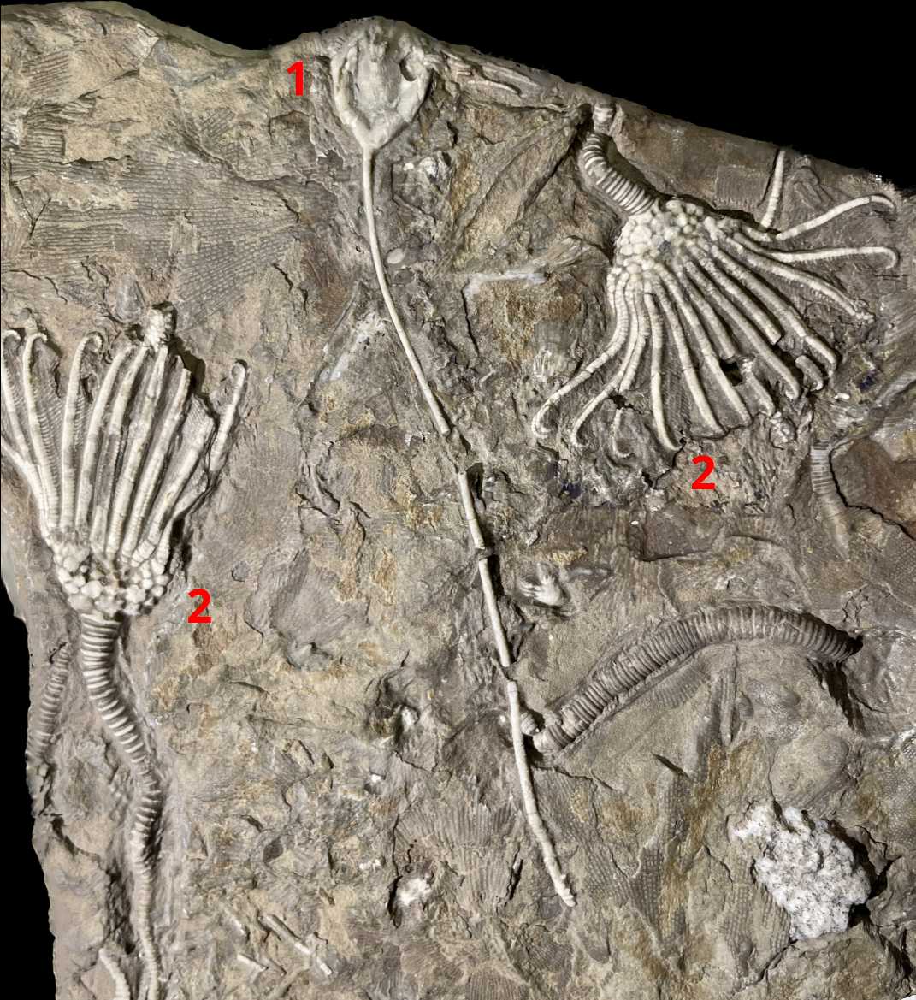
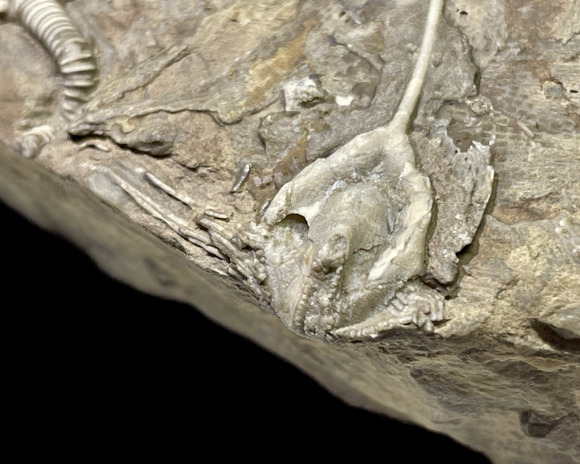
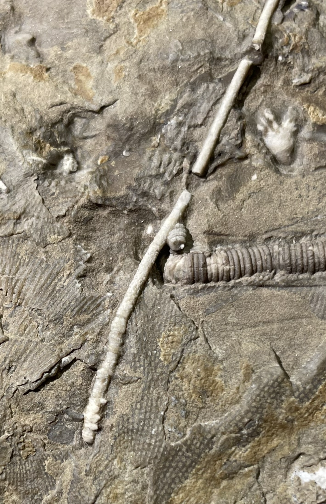
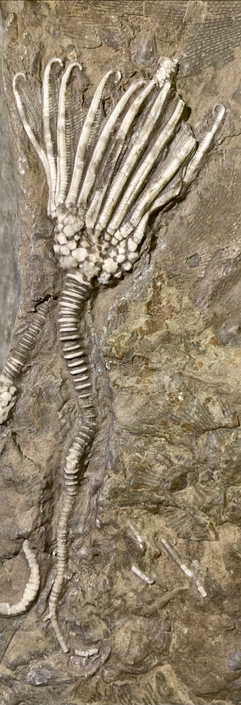
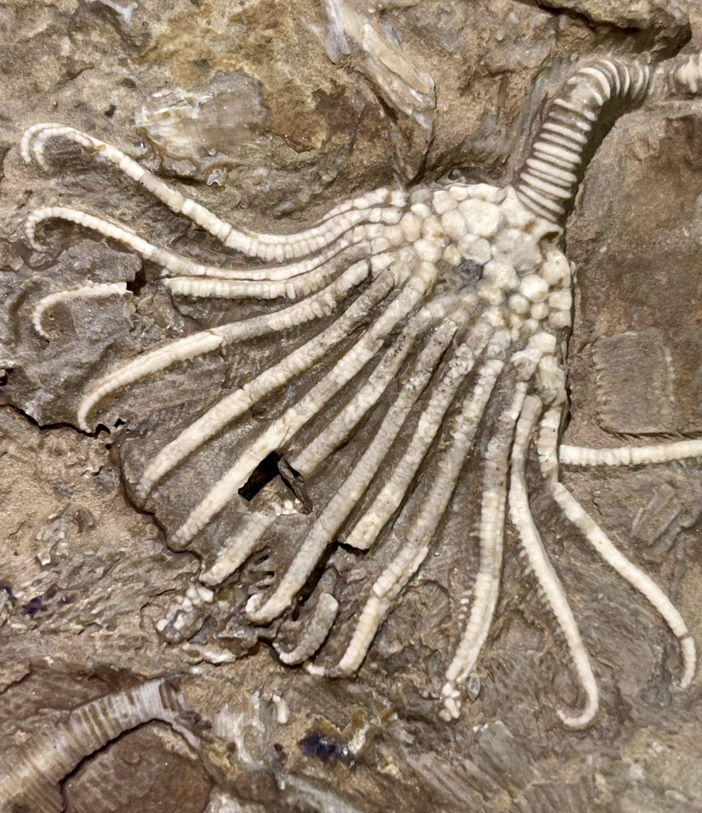
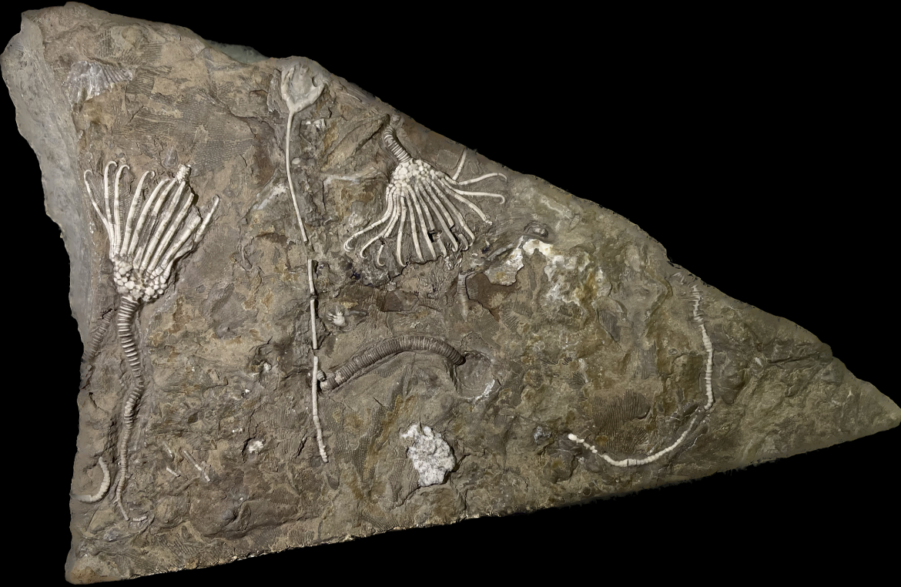

Blastoid+
Size: 3.5 cm crown for the larger Cusacrinus
Here is an impressive slab from the obscure Lodgepole Formation of Montana containing three echinoderms. There are two crinoids known as Cusacrinus nodobrachiatus and between them an unusual blastoid known as Montanablastus baldyensis. The crinoids are lovely specimens with one having a long, near-complete tapering stem, and unusually show their anal tubes poking out above their arms. However in my opinion the centerpiece is the blastoid, as it preserves both the fine, filter-feeding brachioles as well as an extraordinarily long section of stem. In fact, the stumps at the end of the stem seem to be the proximal portions of the distal attachment cirri that make up the blastoid's root system or holdfast, which tells me the stem is nearly complete. Brachiole preservation on blastoids is rare (though not unheard of from this locality), but to have a near-complete stem on top of that is truly remarkable. |
 |
|---|
Copyright © 2024 by Samuel Kim, all rights reserved